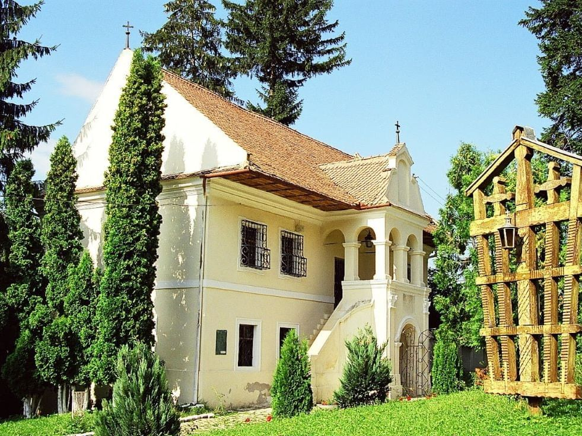

Plimbă-te pe străzi fermecătoare, admiră obiectivele istorice și simte spiritul vibrant al orașului—fără grabă,
doar pași, povești și bucuria explorării!
Livada Poștei
Începe-ți călătoria aici și pășește în inima vibrantă a spiritului maratonului din Brașov.
Provocare: În ce an a fost înființată Universitatea Transilvania?
Piața Sfatului
Piața principală animată a Brașovului, plină de culoare, istorie și priveliști perfecte ale munților din jur.
Provocare: Descoperă vechiul nume al Brașovului și simbolul său ilustrat pe muzeul din centrul pieței!
Biserica Neagră
O capodoperă gotică ce se înalță măreț—apropie-te și simte greutatea trecutului grandios al Brașovului.
Provocare: Caută și citește povestea despre motivul pentru care biserica este numită Neagră (Neagra)?
Poarta Ecaterina
O poartă de poveste cu turnuri și farmec, păstrând povești din zilele medievale ale Brașovului.
Provocare: De ce se numesc Porțile Ecaterina?
Bastionul Țesătorilor
Odată o fortăreață puternică, acum un martor liniștit al apărării și moștenirii meșteșugărești a orașului.
Provocare: Care a fost scopul acestui bastion?
Prima Școală Românească
Un simbol al învățării și limbii, unde a început povestea educației românești.
Provocare: Care este numele bisericii din apropiere?

Piața Unirii
O piață liniștită unde viața urbană întâlnește tradiția—ultima ta oprire urbană înainte de natură.
Provocare: Care este numele inițial al acestei piețe?
Indiciu: Mergi la Pietre lui Solomon cu autobuzul 50.
Pietre lui Solomon
Legende și natură se întâlnesc aici—comoara ascunsă a Brașovului, cu păduri, stânci și evadări liniștite.
Provocare: Găsește o legendă despre Regele Solomon!
Felicitări!
Ai ajuns la linia de sosire! Trage aer în piept, bucură-te de priveliște—povestea Brașovului merge cu tine.
Urmărește Maratonul Internațional pentru mai multe evenimente!
Vechiul nume al Brașovului este Kronstadt, iar simbolul orașului este Coroana cu Rădăcini de copac
După incendiul din biserică din 1689, zidurile bisericii au devenit negre și astfel a primit acest nume
Porțile poartă numele Ecaterina după Mănăstirea Sf. Ecaterina care a existat acolo înainte.
Lățimea zidurilor este de 4 metri!
Se numește Biserica Sf. Nicolae
Numele inițial este „Piața Prundului”, care se referă la pârâul ce venea aici de la Pietrele lui Solomon!
Regele Solomon călărea un cal, iar soldații care voiau să-l prindă îl urmăreau. Fără altă opțiune, Regele Solomon
a încercat să sară de pe o stâncă pe alta. Astfel a reușit să scape.